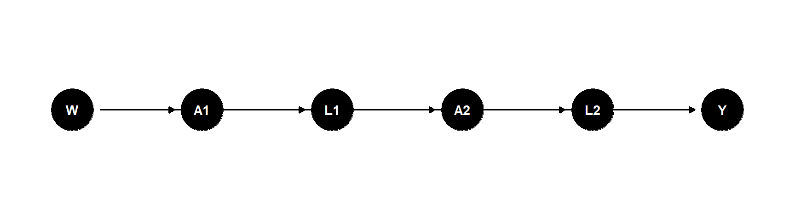
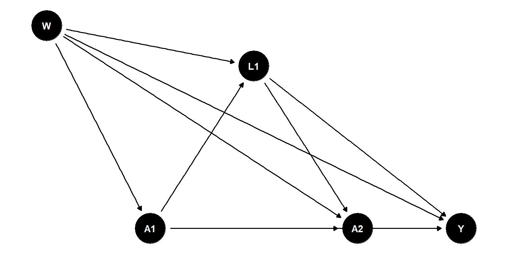
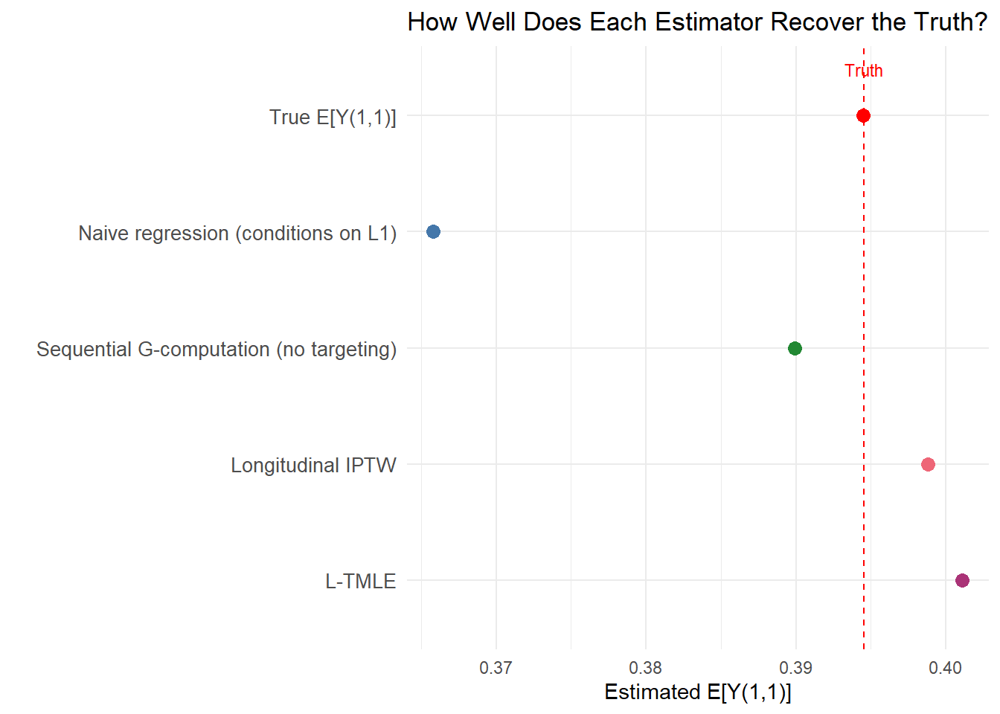

Show code
library(tidyverse)
source("_data/load-haart-cohort.R")Extending the KH Stats approach to time-varying treatments and confounders
Estimated reading time: 40 minutes
How L-TMLE removes time-dependent confounding, step by step
This chapter extends the TMLE framework from Chapter 2.3 to longitudinal settings with time-varying treatments and confounders. It follows the pedagogical approach of Kat Hoffman’s Illustrated Guide to TMLE, building from the familiar 4-step point-treatment algorithm to its longitudinal counterpart. We use a simple two-time-point example so you can see exactly what changes, and why.
The longitudinal case study in Chapter 4.1 provides the clinical context for why these methods matter. Here the focus is on the mechanics.
In the KH Stats illustrated guide, TMLE for a binary treatment and outcome proceeds in four steps:
Fit a model for \(E[Y \mid A, W]\), the expected outcome given treatment and confounders. Use this to predict outcomes under treatment (\(A = 1\)) and under control (\(A = 0\)) for every observation.
\[\hat{Q}(A, W) = \hat{E}[Y \mid A, W]\] \[\hat{Q}(1, W) \quad \text{and} \quad \hat{Q}(0, W)\]
Fit a model for \(P(A = 1 \mid W)\), the probability of treatment given confounders.
\[\hat{g}(W) = \hat{P}(A = 1 \mid W)\]
Combine the propensity score into a covariate that “cleverly” bridges the outcome model and the treatment model:
\[H(A, W) = \frac{I(A=1)}{\hat{g}(W)} - \frac{I(A=0)}{1 - \hat{g}(W)}\]
Run a logistic regression of \(Y\) on \(H(A, W)\) with \(\text{logit}(\hat{Q}(A, W))\) as an offset. The coefficient \(\hat{\epsilon}\) is the fluctuation parameter. Update predictions:
\[\hat{Q}^*(A, W) = \text{expit}\big(\text{logit}(\hat{Q}(A, W)) + \hat{\epsilon} \cdot H(A, W)\big)\]
The TMLE estimate of the ATE is:
\[\hat{\psi} = \frac{1}{n}\sum_i \hat{Q}^*(1, W_i) - \frac{1}{n}\sum_i \hat{Q}^*(0, W_i)\]
This works beautifully for a single treatment decision at one point in time. But what happens when treatment occurs repeatedly over time, and confounders at each time are affected by prior treatment?
Consider a patient followed over two time periods. At each period, they either take a medication (\(A_t = 1\)) or not (\(A_t = 0\)). We measure their health status (\(L_t\)) at each period. We observe a final outcome \(Y\).
The data for one patient looks like:
dag_timeline <- dagify(
A1 ~ W, L1 ~ A1 + W, A2 ~ L1 + W, L2 ~ A2 + L1, Y ~ L2 + A2,
coords = list(
x = c(W = 0, A1 = 1, L1 = 2, A2 = 3, L2 = 4, Y = 5),
y = c(W = 0, A1 = 0, L1 = 0, A2 = 0, L2 = 0, Y = 0)
)
)
ggdag(dag_timeline) + theme_dag()
The critical complication is a feedback loop:
dag_feedback <- dagify(
A1 ~ W, L1 ~ A1 + W, A2 ~ L1 + A1 + W, Y ~ A1 + A2 + L1 + W,
exposure = "A1", outcome = "Y",
coords = list(
x = c(W = 0, A1 = 1, L1 = 2, A2 = 3, Y = 4),
y = c(W = 1, A1 = 0, L1 = 0.8, A2 = 0, Y = 0)
)
)
ggdag(dag_feedback) + theme_dag()
This means \(L_1\) is simultaneously:
If you condition on \(L_1\) in a regression (the standard approach), you block part of the causal effect of \(A_1\) that operates through \(L_1\). You also potentially open collider bias paths.
If you don’t condition on \(L_1\), the effect of \(A_2\) is confounded.
You cannot win with standard regression. This is the fundamental problem that g-methods (including L-TMLE) solve.
Imagine studying whether continuous statin use prevents heart attack over 2 years:
A doctor is more likely to prescribe statins in year 2 if year-1 cholesterol is high (\(L_1\) affects \(A_2\)). But high cholesterol also directly increases heart attack risk (\(L_1\) affects \(Y\)). And year-1 statin use lowers year-1 cholesterol (\(A_1\) affects \(L_1\)).
Conditioning on year-1 cholesterol in a regression blocks the indirect effect of year-1 statin use. Not conditioning on it leaves the year-2 effect confounded. L-TMLE resolves this by working backwards through time.
Point-treatment TMLE estimates \(E[Y \mid A, W]\) in a single step. Longitudinal TMLE uses iterated conditional expectations, a sequence of regressions that build on each other, working from the final outcome backwards to baseline.
For the simple two-time-point case, the causal effect of “always treat” (\(\bar{a} = (1, 1)\)) is:
\[ E[Y(\bar{a})] = E_W\bigg[ E_{L_1}\Big[ E\big[Y \mid A_2 = 1, L_1, A_1 = 1, W\big] \;\Big|\; A_1 = 1, W \Big] \bigg] \]
Reading from inside out:
This is a nested sequence of conditional expectations. L-TMLE estimates each one, starting from the inside (the final outcome) and working outward (backwards in time).
Think of it like planning a road trip:
L-TMLE starts at the destination (the final outcome \(Y\)) and asks: given where we are at each earlier time, what outcome would we expect? Each step peels off one layer of time-varying confounding.
We now walk through the full L-TMLE algorithm for the “always treat” regime \(\bar{a} = (1, 1)\) with two time points. Each step is color-coded to match the point-treatment TMLE steps, so you can see the parallels.
library(tidyverse)
set.seed(2026)
n <- 2000
# --- Baseline ---
W <- rnorm(n, mean = 0, sd = 1) # baseline confounder
# --- Time 1 ---
# Treatment at time 1 (depends on W)
g1_true <- plogis(0.5 + 0.8 * W)
A1 <- rbinom(n, 1, g1_true)
# Time-varying confounder (affected by A1 and W)
L1 <- rnorm(n, mean = 0.5 * W + 0.7 * A1, sd = 1)
# --- Time 2 ---
# Treatment at time 2 (depends on L1 and A1)
g2_true <- plogis(-0.3 + 0.6 * L1 + 0.4 * A1)
A2 <- rbinom(n, 1, g2_true)
# --- Outcome ---
# Y depends on full history
Y <- rbinom(n, 1, plogis(-2 + 0.5 * A1 + 0.6 * A2 + 0.3 * L1 +
0.4 * W + 0.2 * A1 * A2))
dat <- tibble(W, A1, L1, A2, Y)
cat("Observed data:\n")Observed data:head(dat)# A tibble: 6 × 5
W A1 L1 A2 Y
<dbl> <int> <dbl> <int> <int>
1 0.521 1 0.0322 0 0
2 -1.08 0 -0.301 0 0
3 0.139 1 2.54 1 1
4 -0.0847 1 0.337 1 0
5 -0.667 1 0.422 0 1
6 -2.52 0 -0.316 1 0# Simulate the true counterfactual under (A1=1, A2=1)
set.seed(2026)
W_cf <- W # same baseline
# Under A1 = 1
L1_cf <- rnorm(n, mean = 0.5 * W_cf + 0.7 * 1, sd = 1)
# Under A2 = 1
Y_cf_11 <- plogis(-2 + 0.5 * 1 + 0.6 * 1 + 0.3 * L1_cf +
0.4 * W_cf + 0.2 * 1 * 1)
# Under (A1=0, A2=0)
L1_cf_00 <- rnorm(n, mean = 0.5 * W_cf + 0.7 * 0, sd = 1)
Y_cf_00 <- plogis(-2 + 0.5 * 0 + 0.6 * 0 + 0.3 * L1_cf_00 +
0.4 * W_cf + 0.2 * 0 * 0)
true_EY_11 <- mean(Y_cf_11)
true_EY_00 <- mean(Y_cf_00)
true_ATE <- true_EY_11 - true_EY_00
cat("True E[Y(1,1)]:", round(true_EY_11, 4), "\n")True E[Y(1,1)]: 0.3945 cat("True E[Y(0,0)]:", round(true_EY_00, 4), "\n")True E[Y(0,0)]: 0.1328 cat("True ATE: ", round(true_ATE, 4), "\n")True ATE: 0.2617 Now we estimate \(E[Y(1,1)]\), the expected outcome if everyone always received treatment, using L-TMLE.
In point-treatment TMLE, we estimated one propensity score \(g(W)\). In L-TMLE, we estimate a treatment mechanism at every time point, conditional on the history up to that point.
Time 1: \[\hat{g}_1(W) = \hat{P}(A_1 = 1 \mid W)\]
Time 2: \[\hat{g}_2(A_1, L_1, W) = \hat{P}(A_2 = 1 \mid A_1, L_1, W)\]
# Fit treatment models at each time point
1g1_mod <- glm(A1 ~ W, family = binomial, data = dat)
2g2_mod <- glm(A2 ~ L1 + A1 + W, family = binomial, data = dat)
g1_hat <- predict(g1_mod, type = "response")
g2_hat <- predict(g2_mod, type = "response")
# Bound away from 0 and 1
3g1_hat <- pmax(0.01, pmin(0.99, g1_hat))
g2_hat <- pmax(0.01, pmin(0.99, g2_hat))For the “always treat” regime, the probability that a patient follows the full regime is the product of time-specific probabilities:
\[\hat{g}_{\bar{1}}(W, L_1) = \hat{g}_1(W) \times \hat{g}_2(A_1=1, L_1, W)\]
# Cumulative probability of following the "always treat" regime
# g2 needs to be evaluated at A1=1 (the intervention value)
g2_under_a1 <- predict(g2_mod,
1 newdata = dat %>% mutate(A1 = 1),
type = "response")
g2_under_a1 <- pmax(0.01, pmin(0.99, g2_under_a1))
2g_cumulative <- g1_hat * g2_under_a1
cat("Cumulative g range:", round(range(g_cumulative), 3), "\n")
cat("Cumulative g mean: ", round(mean(g_cumulative), 3), "\n")Cumulative g range: 0.017 0.845
Cumulative g mean: 0.36 This is where L-TMLE diverges from point-treatment TMLE. Instead of one outcome model, we build a sequence of outcome regressions, starting at the final outcome and moving backwards.
Just like point-treatment TMLE, start by modeling \(E[Y \mid A_2, L_1, A_1, W]\). This is the expected outcome given the complete observed history.
\[\hat{Q}_2(A_2, L_1, A_1, W) = \hat{E}[Y \mid A_2, L_1, A_1, W]\]
Then predict under the intervention \(A_2 = 1\):
\[\hat{Q}_2(1, L_1, A_1, W)\]
# Step 2a: Outcome regression at the final time point
1Q2_mod <- glm(Y ~ A2 + L1 + A1 + W + A1:A2, family = binomial, data = dat)
# Predict under intervention A2 = 1, keeping everything else observed
Q2_A2is1 <- predict(Q2_mod,
2 newdata = dat %>% mutate(A2 = 1),
type = "response")
cat("Initial Q2(A2=1) range:", round(range(Q2_A2is1), 4), "\n")A1:A2 captures effect modification of the treatment history on the outcome.
Initial Q2(A2=1) range: 0.0343 0.7825 Here is the critical step that handles time-dependent confounding. We take the predictions \(\hat{Q}_2(1, L_1, A_1, W)\) (which are functions of \(L_1\), \(A_1\), and \(W\)) and treat them as a new outcome to be modeled at time 1.
We fit a regression of \(\hat{Q}_2(1, L_1, A_1, W)\) on \((A_1, W)\), averaging over \(L_1\) in the process:
\[\hat{Q}_1(A_1, W) = \hat{E}\big[\hat{Q}_2(1, L_1, A_1, W) \;\big|\; A_1, W\big]\]
Then predict under the intervention \(A_1 = 1\):
\[\hat{Q}_1(1, W)\]
# Step 2b: Backwards regression -- model Q2 predictions as a function of (A1, W)
# This "integrates out" L1 from the estimation
1Q1_mod <- glm(Q2_A2is1 ~ A1 + W, family = quasibinomial, data = dat)
# Predict under intervention A1 = 1
Q1_A1is1 <- predict(Q1_mod,
2 newdata = dat %>% mutate(A1 = 1),
type = "response")
cat("Initial Q1(A1=1) range:", round(range(Q1_A1is1), 4), "\n")
cat("Initial G-comp estimate E[Y(1,1)]:", round(mean(Q1_A1is1), 4), "\n")
cat("True E[Y(1,1)]: ", round(true_EY_11, 4), "\n")quasibinomial accommodates the continuous (non-integer) outcome from the previous step.
Initial Q1(A1=1) range: 0.1412 0.7377
Initial G-comp estimate E[Y(1,1)]: 0.3899
True E[Y(1,1)]: 0.3945 This two-step backwards regression is the longitudinal G-computation formula in action:
Step 2a estimated \(E[Y \mid A_2=1, L_1, A_1, W]\): what we expect the outcome to be if \(A_2 = 1\), for each specific value of \(L_1\)
Step 2b estimated \(E_{L_1}[E[Y \mid A_2=1, L_1, A_1=1, W] \mid A_1=1, W]\): the expected outcome under both \(A_1=1\) and \(A_2=1\), averaging over \(L_1\) as it would be under \(A_1 = 1\)
By regressing the time-2 predictions on \((A_1, W)\) without conditioning on \(L_1\), we allowed \(L_1\) to vary as it naturally would under the intervention \(A_1 = 1\). This is how the backwards regression avoids the standard regression trap: it never conditions on the time-varying confounder while simultaneously modeling it as affected by treatment.
This is longitudinal G-computation. But like point-treatment G-computation, it depends on both models being correctly specified. The targeting steps below make it doubly robust.
Now we have initial estimates \(\hat{Q}_2\) and \(\hat{Q}_1\) from the sequential regressions. These estimates are optimized to predict well, but they are not yet “targeted” at our specific estimand \(E[Y(1,1)]\).
The targeting steps update these initial estimates using information from the treatment mechanism, just like in point-treatment TMLE, but now we do it at each time step, working backwards.
Construct the clever covariate at time 2. For the “always treat” regime, among observations with \(A_1 = 1\) and \(A_2 = 1\) (those who followed the regime), this is:
\[H_2 = \frac{I(A_1 = 1, A_2 = 1)}{\hat{g}_1(W) \times \hat{g}_2(1, L_1, W)}\]
This is the inverse of the cumulative probability of following the full treatment regime through time 2.
Fit the fluctuation model:
\[\text{logit}(Y) = \text{logit}(\hat{Q}_2(A_2, L_1, A_1, W)) + \epsilon_2 \cdot H_2\]
Update: \(\hat{Q}_2^*(A_2, L_1, A_1, W) = \text{expit}(\text{logit}(\hat{Q}_2) + \hat{\epsilon}_2 \cdot H_2)\)
logit <- function(p) log(p / (1 - p))
# Clever covariate at time 2
# Only patients who followed regime at BOTH times contribute
1H2 <- (dat$A1 == 1 & dat$A2 == 1) / (g1_hat * g2_hat)
# Prediction from Q2 at OBSERVED (A1, A2)
QA_init_t2 <- predict(Q2_mod, type = "response")
# Fluctuation model at time 2
2fluc2 <- glm(dat$Y ~ -1 + offset(logit(QA_init_t2)) + H2,
family = binomial)
eps2 <- coef(fluc2)
# Update Q2 predictions under A2=1
3Q2_star <- plogis(logit(Q2_A2is1) + eps2 / (g1_hat * g2_under_a1))
# Note: for the targeted predictions under intervention, H2 = 1/g_cumulative
cat("Epsilon at time 2:", round(eps2, 5), "\n")
cat("Updated Q2*(A2=1) range:", round(range(Q2_star), 4), "\n")-1 suppresses intercept, offset(logit(...)) fixes the initial Q, and only ε₂ is fit. The clever covariate H2 incorporates the full cumulative propensity, targeting the fluctuation at the “always treat” estimand.
H2
Epsilon at time 2: 0.01659
Updated Q2*(A2=1) range: 0.0767 0.7858 Now we repeat the targeting at time 1, but using the updated \(\hat{Q}_2^*\) as the outcome.
Re-fit the backwards regression using \(\hat{Q}_2^*\) (the targeted predictions from step 3a):
\[\hat{Q}_1^{\text{updated}}(A_1, W) = \hat{E}\big[\hat{Q}_2^*(1, L_1, A_1, W) \;\big|\; A_1, W\big]\]
Then target with the clever covariate at time 1:
\[H_1 = \frac{I(A_1 = 1)}{\hat{g}_1(W)}\]
Fit: \(\text{logit}(\hat{Q}_2^*) = \text{logit}(\hat{Q}_1^{\text{updated}}) + \epsilon_1 \cdot H_1\)
Update: \(\hat{Q}_1^*(1, W) = \text{expit}(\text{logit}(\hat{Q}_1^{\text{updated}}) + \hat{\epsilon}_1 \cdot H_1)\)
# Re-fit backwards regression using targeted Q2*
1Q1_mod_updated <- glm(Q2_star ~ A1 + W, family = quasibinomial, data = dat)
Q1_updated <- predict(Q1_mod_updated, type = "response")
Q1_under_a1 <- predict(Q1_mod_updated,
newdata = dat %>% mutate(A1 = 1),
type = "response")
# Clever covariate at time 1
2H1 <- (dat$A1 == 1) / g1_hat
# Fluctuation model at time 1
3fluc1 <- glm(Q2_star ~ -1 + offset(logit(Q1_updated)) + H1,
family = quasibinomial)
eps1 <- coef(fluc1)
# Final targeted predictions under A1 = 1
4Q1_star <- plogis(logit(Q1_under_a1) + eps1 / g1_hat)
cat("Epsilon at time 1:", round(eps1, 5), "\n")quasibinomial accommodates the continuous pseudo-outcome from the backwards regression
Epsilon at time 1: -0.00084 The L-TMLE estimate of \(E[Y(1,1)]\) is the sample mean of the final targeted predictions:
\[\hat{\psi}_{\text{LTMLE}} = \frac{1}{n} \sum_{i=1}^{n} \hat{Q}_1^*(1, W_i)\]
ltmle_estimate <- mean(Q1_star)
cat("========================================\n")========================================cat("L-TMLE estimate E[Y(1,1)]:", round(ltmle_estimate, 4), "\n")L-TMLE estimate E[Y(1,1)]: 0.4011 cat("True E[Y(1,1)]: ", round(true_EY_11, 4), "\n")True E[Y(1,1)]: 0.3945 cat("Naive G-comp (no targeting):", round(mean(Q1_A1is1), 4), "\n")Naive G-comp (no targeting): 0.3899 cat("========================================\n")========================================This is the most important section. Let us build intuition for why the backwards targeting procedure works.
In our statin example:
A naive regression that conditions on \(L_1\) blocks the indirect effect \(A_1 \to L_1 \to Y\) and introduces collider bias. But not adjusting for \(L_1\) confounds the \(A_2 \to Y\) effect.
At time 2: We fit \(E[Y \mid A_2, L_1, A_1, W]\) and DO condition on \(L_1\). This correctly adjusts for the confounding of \(A_2\) by \(L_1\).
At time 1: We regress the time-2 predictions on \((A_1, W)\) and do NOT condition on \(L_1\). Instead, we let \(L_1\) vary freely. This preserves the indirect effect \(A_1 \to L_1 \to Y\).
By working backwards, we condition on \(L_1\) only where it is needed (as a confounder of \(A_2\)) and integrate it out where conditioning would be harmful (as a mediator of \(A_1\)).
The sequential regression (G-computation) above handles the time-ordering correctly, but it relies on all outcome models being correctly specified. The targeting steps add robustness:
At time 2: The fluctuation step using \(H_2 = \frac{I(A_1=1, A_2=1)}{g_1 \cdot g_2}\) corrects the outcome model using information from the treatment models. Even if \(\hat{Q}_2\) is somewhat misspecified, the clever covariate steers the predictions toward the correct value for our target estimand.
At time 1: The fluctuation step using \(H_1 = \frac{I(A_1=1)}{g_1}\) further corrects \(\hat{Q}_1\) using the time-1 treatment model.
Together, these targeting steps achieve sequential double robustness: the final estimate is consistent if, at each time point, either the outcome model OR the treatment model is correctly specified.
For point-treatment TMLE, double robustness means: consistent if \(\hat{Q}\) OR \(\hat{g}\) is correct.
For L-TMLE, it extends to: consistent if at each time step, either the \(\hat{Q}_t\) or \(\hat{g}_t\) is correct. Specifically:
| If correct at time 2 | If correct at time 1 | L-TMLE is… |
|---|---|---|
| \(Q_2\) only | \(Q_1\) only | Consistent |
| \(g_2\) only | \(g_1\) only | Consistent |
| \(Q_2\) only | \(g_1\) only | Consistent |
| \(g_2\) only | \(Q_1\) only | Consistent |
| Neither | Anything | Not guaranteed |
This is a much stronger property than simply requiring one global model to be correct.
# --- Naive: condition on everything ---
naive_mod <- glm(Y ~ A1 + A2 + L1 + W, family = binomial, data = dat)
naive_pred <- predict(naive_mod,
newdata = dat %>% mutate(A1 = 1, A2 = 1),
type = "response")
naive_est <- mean(naive_pred)
# --- Standard IPTW with cumulative weights ---
# Weight = 1 / P(observed treatment sequence)
iptw_w <- ifelse(dat$A1 == 1 & dat$A2 == 1,
1 / (g1_hat * g2_hat),
0)
# Horvitz-Thompson
iptw_est <- sum(iptw_w * dat$Y) / sum(iptw_w)
# --- Compare ---
comparison <- tibble(
Method = c("True E[Y(1,1)]",
"Naive regression (conditions on L1)",
"Sequential G-computation (no targeting)",
"Longitudinal IPTW",
"L-TMLE"),
Estimate = round(c(true_EY_11, naive_est, mean(Q1_A1is1), iptw_est, ltmle_estimate), 4)
)
comparison# A tibble: 5 × 2
Method Estimate
<chr> <dbl>
1 True E[Y(1,1)] 0.394
2 Naive regression (conditions on L1) 0.366
3 Sequential G-computation (no targeting) 0.390
4 Longitudinal IPTW 0.399
5 L-TMLE 0.401ggplot(comparison, aes(x = Estimate,
y = factor(Method, levels = rev(comparison$Method)))) +
geom_point(size = 3, color = c("red", "#4477AA", "#228833", "#EE6677", "#AA3377")) +
geom_vline(xintercept = true_EY_11, linetype = "dashed", color = "red", linewidth = 0.5) +
annotate("text", x = true_EY_11, y = 5.4, label = "Truth", color = "red", size = 3) +
labs(x = "Estimated E[Y(1,1)]", y = "", title = "How Well Does Each Estimator Recover the Truth?") +
theme_minimal() +
theme(axis.text.y = element_text(size = 10))
POINT-TREATMENT TMLE LONGITUDINAL TMLE (2 time points)
┌─────────────────────┐ ┌─────────────────────────────────┐
│ Step 1: Fit Q(A,W) │ │ Step 2a: Fit Q₂(A₂,L₁,A₁,W) │
│ = E[Y | A, W] │ │ = E[Y | A₂, L₁, A₁, W] │
└──────────┬──────────┘ └──────────────┬──────────────────┘
│ │
│ ┌──────────────▼──────────────────┐
│ │ Step 3a: Target Q₂ using H₂ │
│ │ (clever cov with cumulative g) │
│ └──────────────┬──────────────────┘
│ │
│ ┌──────────────▼──────────────────┐
│ │ Step 2b: Fit Q₁(A₁,W) │
│ │ = E[Q₂* | A₁, W] │
│ │ (uses TARGETED Q₂ as outcome) │
│ └──────────────┬──────────────────┘
│ │
┌──────────▼──────────┐ ┌──────────────▼──────────────────┐
│ Step 2: Fit g(W) │ │ Step 1: Fit g₁(W) and │
│ = P(A=1|W) │ │ g₂(L₁,A₁,W) │
└──────────┬──────────┘ └──────────────┬──────────────────┘
│ │
┌──────────▼──────────┐ ┌──────────────▼──────────────────┐
│ Step 3: Clever cov │ │ Step 3b: Target Q₁ using H₁ │
│ H = I(A=1)/g │ │ (clever cov with g₁ only) │
└──────────┬──────────┘ └──────────────┬──────────────────┘
│ │
┌──────────▼──────────┐ ┌──────────────▼──────────────────┐
│ Step 4: Target Q │ │ Step 4: Average Q₁* │
│ and estimate ATE │ │ = E[Y(1,1)] via L-TMLE │
└─────────────────────┘ └─────────────────────────────────┘The parallel structure is clear: L-TMLE repeats the “model → target” cycle at each time point, working backwards from the outcome.
With \(T\) time points, L-TMLE follows the same pattern:
Each backwards step:
In longitudinal IPTW, the weights are products of \(T\) terms: \(w = \prod_{t=1}^{T} 1/g_t\). With many time points, these products can become extremely large or small, making IPTW unstable.
L-TMLE avoids this by incorporating the treatment information through targeting steps rather than multiplicative weights. The clever covariates still involve the cumulative product, but they enter through a logistic fluctuation model that is far more numerically stable than multiplying raw weights.
This is a major practical advantage of L-TMLE over longitudinal IPTW.
ltmle PackageThe ltmle R package automates the entire procedure above. Here is how you would use it for our two-time-point example:
library(ltmle)
# Data must be in temporal order: W, A1, L1, A2, Y
dat_ltmle <- data.frame(
W = dat$W,
A1 = dat$A1,
L1 = dat$L1,
A2 = dat$A2,
Y = dat$Y
)
# Specify the "always treat" intervention
result <- ltmle(
1 data = dat_ltmle,
2 Anodes = c("A1", "A2"),
3 Lnodes = c("L1"),
4 Ynodes = "Y",
5 abar = c(1, 1),
6 SL.library = c("SL.glm", "SL.mean")
)
summary(result)Anodes: character vector naming treatment columns in temporal order; ltmle fits a propensity model at each time point conditioning on all prior history
Lnodes: character vector naming time-varying covariate columns that occur between treatment time points; these are the variables that create treatment-confounder feedback (the “L” in L-TMLE)
Ynodes: name of the outcome column; for survival outcomes you can specify multiple Y columns representing censoring-adjusted event times
abar: the static intervention regime — c(1, 1) means “always treat at both time points”; use list(treatment = c(1,1), control = c(0,0)) to estimate the ATE
SL.library: applied to both the Q and g nuisance models; for real analyses use a richer library such as c("SL.glm", "SL.earth", "SL.ranger", "SL.glmnet")
The package handles all the backwards regressions, clever covariates, fluctuation steps, and influence-curve inference automatically.
For more flexible interventions (stochastic, dynamic), the lmtp package extends this framework:
library(lmtp)
result_lmtp <- lmtp_tmle(
data = dat,
1 trt = c("A1", "A2"),
outcome = "Y",
2 baseline = "W",
3 time_vary = list("L1"),
4 shift = function(data, trt) rep(1, nrow(data)),
outcome_type = "binomial",
5 learners_outcome = c("SL.glm", "SL.mean"),
6 learners_trt = c("SL.glm", "SL.mean"),
7 folds = 5
)
result_lmtptrt: treatment column names in temporal order; lmtp fits a separate propensity model at each time point
baseline: time-fixed baseline covariates included in every nuisance model but not intervened upon
time_vary: list of time-varying covariate column names, one element per time period; these are the L nodes that create treatment-confounder feedback
shift: the heart of lmtp — a function that takes the data and current treatment column name and returns the intervened treatment values; here rep(1, nrow(data)) implements a static “always treat” regime, but any function can be used for dynamic or stochastic interventions
learners_outcome: Super Learner library for the sequential outcome regressions \(Q_t\) — can differ from the treatment learners
learners_trt: Super Learner library for the propensity models \(g_t\) — for complex treatment patterns, use flexible learners here
folds = 5: number of cross-fitting folds for nuisance estimation; cross-fitting prevents overfitting bias when using machine learning, enabling valid inference via the efficient influence function
1. Backwards sequential regression handles time-varying confounding correctly by conditioning on \(L_t\) where it is a confounder and integrating it out where it is a mediator. No standard regression can do both.
2. Targeting at each time step makes the estimator doubly robust at every stage. Even if some outcome models are misspecified, the treatment mechanism models can compensate (and vice versa).
3. Working on the logit scale ensures all predictions stay bounded between 0 and 1, and avoids the extreme-weight instability of longitudinal IPTW.
| Feature | Standard regression | Longitudinal IPTW | Longitudinal G-comp | L-TMLE |
|---|---|---|---|---|
| Handles time-varying confounding | No | Yes | Yes | Yes |
| Avoids extreme weights | Yes | No | Yes | Yes |
| Doubly robust | No | No | No | Yes |
| Works with machine learning | Partially | Partially | Partially | Yes |
| Valid inference | Standard SE | Sandwich SE | Bootstrap | Influence curve |
| Respects bounds | Depends | N/A | Not guaranteed | Yes |
Time-varying confounders affected by prior treatment create a problem that no standard regression can solve. You need g-methods.
L-TMLE extends point-treatment TMLE by iterating the “model → target” cycle backwards through time. If you understand the KH Stats 4-step TMLE, L-TMLE is the same idea repeated at each time point.
The backwards regression handles the “condition or not?” dilemma: condition on \(L_t\) to deconfound \(A_{t+1}\), then integrate it out to preserve \(A_t\)’s mediated effect.
Targeting at each step makes L-TMLE doubly robust at every time point, not just globally.
L-TMLE avoids the extreme weight problem of longitudinal IPTW by incorporating treatment information through logistic fluctuation models rather than multiplicative weights.
Packages ltmle and lmtp automate the entire procedure, including Super Learner integration and influence-curve inference.
With the mechanics of longitudinal TMLE understood, the next chapter applies these methods to a complete case study: estimating the effect of sustained osteoporosis treatment over 3 years using real-world data concepts.
This guide was inspired by Kat Hoffman’s Illustrated Guide to TMLE and her visual guides for causal inference. The backwards sequential regression framework for L-TMLE is described in Petersen, Schwab, Gruber, Blaser, Schomaker, and van der Laan (2014) and Schnitzer et al.
sessionInfo()R version 4.4.2 (2024-10-31 ucrt)
Platform: x86_64-w64-mingw32/x64
Running under: Windows 11 x64 (build 26200)
Matrix products: default
locale:
[1] LC_COLLATE=English_United States.utf8
[2] LC_CTYPE=English_United States.utf8
[3] LC_MONETARY=English_United States.utf8
[4] LC_NUMERIC=C
[5] LC_TIME=English_United States.utf8
time zone: America/Los_Angeles
tzcode source: internal
attached base packages:
[1] stats graphics grDevices utils datasets methods base
other attached packages:
[1] ggdag_0.2.13 dagitty_0.3-4 ipw_1.2.1 lubridate_1.9.3
[5] forcats_1.0.0 stringr_1.6.0 dplyr_1.1.4 purrr_1.0.2
[9] readr_2.1.5 tidyr_1.3.1 tibble_3.2.1 ggplot2_4.0.2
[13] tidyverse_2.0.0
loaded via a namespace (and not attached):
[1] gtable_0.3.6 xfun_0.49 htmlwidgets_1.6.4 ggrepel_0.9.6
[5] lattice_0.22-6 tzdb_0.4.0 vctrs_0.7.1 tools_4.4.2
[9] generics_0.1.3 curl_6.0.1 fansi_1.0.6 pkgconfig_2.0.3
[13] Matrix_1.7-1 RColorBrewer_1.1-3 S7_0.2.1 lifecycle_1.0.5
[17] compiler_4.4.2 farver_2.1.2 ggforce_0.4.2 graphlayouts_1.2.2
[21] htmltools_0.5.8.1 yaml_2.3.10 pillar_1.9.0 MASS_7.3-65
[25] cachem_1.1.0 viridis_0.6.5 boot_1.3-31 tidyselect_1.2.1
[29] digest_0.6.37 stringi_1.8.7 labeling_0.4.3 geepack_1.3.12
[33] splines_4.4.2 polyclip_1.10-7 fastmap_1.2.0 grid_4.4.2
[37] cli_3.6.5 magrittr_2.0.3 ggraph_2.2.1 tidygraph_1.3.1
[41] survival_3.7-0 utf8_1.2.4 broom_1.0.7 withr_3.0.2
[45] scales_1.4.0 backports_1.5.0 timechange_0.3.0 rmarkdown_2.29
[49] igraph_2.2.1 nnet_7.3-19 gridExtra_2.3 hms_1.1.3
[53] memoise_2.0.1 evaluate_1.0.5 knitr_1.49 V8_6.0.0
[57] viridisLite_0.4.3 rlang_1.1.7 Rcpp_1.0.13-1 glue_1.8.0
[61] tweenr_2.0.3 rstudioapi_0.17.1 jsonlite_2.0.0 R6_2.6.1 This example uses the ltmle package for a minimal, well-commented longitudinal TMLE that mirrors the visual walkthrough in this chapter: backwards sequential regression with targeting at each time step.
ltmle() with abar for static “always treat” vs. “never treat”set.seed(1)
n <- 400
W <- rnorm(n)
A_1 <- rbinom(n, 1, plogis(0.3 * W))
L_1 <- rnorm(n, mean = 0.5 * A_1 + 0.4 * W, sd = 0.8)
A_2 <- rbinom(n, 1, plogis(-0.2 + 0.3 * L_1 + 0.2 * W))
Y <- rbinom(n, 1, plogis(-1 + 0.4 * A_1 + 0.4 * A_2 + 0.3 * L_1 + 0.3 * W))
dat <- data.frame(W = W, A_1 = A_1, L_1 = L_1, A_2 = A_2, Y = Y)
if (requireNamespace("ltmle", quietly = TRUE)) {
library(ltmle)
result <- ltmle(
data = dat,
Anodes = c("A_1", "A_2"),
Lnodes = "L_1",
Ynodes = "Y",
abar = list(treatment = c(1, 1), control = c(0, 0)),
SL.library = "glm"
)
cat("── Longitudinal TMLE (always treat vs never treat) ──\n")
print(summary(result))
cat("\nThis mirrors the backwards-regression + targeting\n")
cat("walkthrough illustrated earlier in this chapter.\n")
} else {
message("Install the 'ltmle' package: install.packages('ltmle')")
}